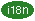
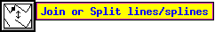
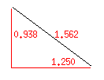

Command Line Options and Resources
 Mode Settings
Mode Settings
-
PRINT and EXPORT
-
Fonts or Colors, etc.
-
Size of Windows, etc.
-
Other Settings
-
Mode Resources
-
PRINT and EXPORT
-
Fonts or Colors, etc.
-
Size of Windows, etc.
-
Other Resources
-
Resources for Internationalization

xfig will accept the following command-line options.
They may be specified such as `xfig -portrait -metric'
when starting xfig. A short form of the option name is shown
in parentheses. This is the miminum number of letters needed to distinguish
it from another option.
It is also possible to use X resources
instead of, or in addition to command-line options.
There are also some xfig-related
environment variables.
- -allownegcoords (-allow)
- Allow panning the canvas into the negative region.
This is the default.
Also, in this mode the user is not asked if he/she wants to shift the figure
when reading in a file with objects that have negative coordinates.
- -dontallownegcoords (-dontallow)
- Don't allow panning the canvas into the negative region.
Also, when in this mode the user is asked if he/she wants to
shift the figure when reading
in a file with objects that have negative coordinates.
- -autorefresh
- Make xfig look at the timestamp on the .fig file and
automatically load it and display it every time it changes.
- -dontshowaxislines (-dontshowa)
- Don't draw the axis lines crossing through 0,0 on the canvas. The
page border may still be drawn unless
-dontshowpageborder is selected.
- -freehand_resolution resolution (-free)
- Set the resolution of the freehand drawing mode to resolution
pixels. This is the number of pixels the mouse must move before xfig
adds another point to the object being drawn.
- -grid_unit unit (-grid_u)
- Set the unit of the grid and rulers when in inches mode.
If unit is "1/10", "ten", "tenth",
"1/10" or "10", (e.g. -grid_unit ten)
then the grid and point positioning is in decimal inches. Otherwise
they are in 1/16 inch units (as before). When in this mode, the grid
step sizes are 0.1, 0.2, 0.5 and 1 inch and the positioning steps are
0.05, 0.10, 0.2, 0.5, and 1.0 inch.
The default is 1/16 inch.
- -hiddentext (-hi)
- Set the Hidden flag of
TEXT FLAGS to ON.
The default is off.
- -inches (-inc, -imperial)
- Make inches the unit of choice.
This is the default.
See also the -metric option
and Set Units.
- -landscape (-lan)
- Start xfig in landscape (11inch x 8.5inch) mode.
This is the default.
See also the -portrait option.
It is also possible to change the orientation using the
View/Portrait/Landscape menu entry
after starting xfig.
Fig files of version 3.0 and later contain the orientation information,
and the mode will be changed as those files are loaded.
- -latexfonts (-lat)
- Select LaTeX fonts to start.
Normally, PostScript fonts are selected.
- -metric (-me, -centimeters)
- Make centimeters the unit of choice.
The default is inches.
See also the -inches option
and Set Units.
- -portrait (-po)
- Start xfig in portrait (8.5inch x 9inch) mode.
The default is landscape mode.
See also the -landscape option.
- -rigidtext (-rigi)
- Set the Rigid flag of
TEXT FLAGS to ON.
The default is off.
- -rulerthick thick (-ru)
- Set the thickness of top and side rulers in pixels.
The default (and minimum) is 24.
- -scale_factor scale (-scale_factor)
- Scale all drawings read in by scale factor. This is useful in
conjunction with the update -update option to do a batch scaling of
figures.
- -showaxislines (-showa)
- Draw the axis lines crossing through 0,0 on the canvas.
See also axislines option for the color of the zero lines.
- -smallicons (-sma)
- Use small button icons on mode panel.
- -specialtext (-spec)
- Set the TeX flag of
TEXT FLAGS to ON.
The default is off.
- -startfontsize pointsize (-startfo)
- Set the initial value of
TEXT SIZE.
The default is 12pt.
- -startpsFont font (-startps)
- Select the initial PostScript font as
TEXT FONT.
The default is Times-Roman.
- -startlatexFont font (-startla)
- Select the initial LaTeX font as
TEXT FONT.
This is effective only if -latexfonts option is given.
The default is Default.
- -starttextstep stepsize (-startt)
- Set the initial value of
TEXT STEP.
The default is 1.2.
- -startfillstyle stylenumber (-startfi)
- Set the initial setting (-1 to 21) of
FILL STYLE.
The default is -1 (No fill).
- -startgridmode modenumber (-startg)
- Set the initial
GRID MODE.
Mode 0 is None.
When unit is inches,
mode 1 1/8 inch, mode 2 is 1/4 inch, mode 3 is 1/2 inch, and mode 4 is 1 inch.
When unit is centimeters,
mode 1 2mm, mode 2 is 5mm, mode 3 is 1cm, and mode 4 is 2cm.
The default is mode 0 (no grid).
- -startposnmode modenumber (-startpo)
- Set the initial
POINT POSITION.
Mode 0 is Any.
When unit is inches, mode 1 is 1/16 inch, mode 2 is 1/8 inch, mode 3 is 1/4 inch,
mode 4 is 1/2 inch, and mode 5 is 1 inch.
When unit is centimeters, mode 1 is 1mm, mode 2 is 2mm, mode 3 is 5mm,
mode 4 is 1cm, and mode 5 is 2cm.
The default is mode 1 (1/16inch or 1mm).
- -startlinewidth width (-startli)
- Set the initial value of
LINE WIDTH.
The default is 1.
- -update file [ file ... ] (-up)
-
Run xfig in an "update" mode, where it will read each Fig file specified
on the command line and write it out to the original file,
in the current file format for the version of xfig being run.
The original Fig file will be preserved with
the suffix .bak attached to the name.
In this mode, xfig doesn't connect the X server, so no window is opened,
and it exits when finished.
- -userscale scale (-users)
- Set the multiplier used when displaying dimensions.
See also Set Units.
- -userunit units (-useru)
- Set the unit name used when displaying dimensions.
See also Set Units.
- -axislines color (-axisl)
- Draw the axis lines crossing through 0,0 on the canvas in this color.
The -showaxislines option must be on.
The page border lines will overwrite the zero lines in the positive
quadrant unless it is turned off.
- -zoom zoomscale
- Set the initial value of
ZOOM SCALE.
The default is 1.0.
- -center (-cente)
- Select Center as Justification
when Exporting
or Printing.
This the the default.
- -exportLanguage language (-exportL)
- Set the initial export language when
Exporting.
Language may be one of the following:
Vector formats:
box LaTeX box (figure boundary)
shape ShapePar definition
latex LaTeX picture
epic LaTeX picture + epic macros
eepic LaTeX picture + eepic macros
eepicemu LaTeX picture + eepicemu macros
tikz LaTeX picture + tikz macros
pict2e LaTeX picture + pict2e macros
pstricks LaTeX + pstricks macros
pictex PiCTeX macros
ibmgl IBMGL (or HPGL)
eps Encapsulated PostScript
ps PostScript
pspdf EPS and PDF (two files)
pdf Portable Document Format
pstex Combined PS/LaTeX (both PS and LaTeX parts)
pdftex Combined PDF/LaTeX (both PDF and LaTeX parts)
pspdftex Combined PS/PDF/LaTeX (three files)
textyl Textyl \special commands
tpic TPIC
pic PIC
html HTML Image map
mf MF (MetaFont)
mp MP (MetaPost)
cgm CGM (Computer Graphics Metafile)
emf EMF (Enhanced Metafile Format)
dxf DXF (Drawing Interchange Format)
gbx GBX (Gerber, RS-247-X)
tk Tk (aka Tcl/Tk)
ptk Perl/Tk
Bitmap formats:
gif GIF
jpg JPEG (JFIF)
pcx PCX
png PNG (Portable Network Graphics)
ppm PPM (Portable Pixmap)
sld AutoCAD Slide format
tiff TIFF (no compression)
xbm X11 Bitmap
xpm X11 Pixmap (XPM3 package)
The default is eps.
- -export_margin (-export_m)
- Set the size of the border margin around the figure for exporting
to bitmap, PostScript, Encapsulated PostScript, or HTML MAP formats.
This is in units of pixels (1/80th inch).
The default is 0.
- -flushleft (-flu)
- Select Flush Left as Justification
when Exporting
or Printing.
The default is Centered.
- -jpeg_quality quality (-j)
- Set the quality used
when Exporting
to the JPEG (JFIF) image format.
- -magnification mag (-mag)
- Set Magnification when
Exporting
or Printing.
mag is magnification in %.
The default is 100%.
- -multiple (-mu)
- Set Pages to Multiple
when Exporting
or Printing.
The default is Single.
- -paper_size size (-pap)
- Set the paper size
when Exporting
or Printing.
size can be one of follows:
| Paper | Size | Option name |
|---|
| Letter | 8.5in x 11in | Letter |
| Legal | 8.5in x 14in | Legal |
| Tabloid | 17in x 11in | Tabloid |
| ANSI A | 8.5in x 11in | A |
| ANSI B | 11in x 17in | B |
| ANSI C | 17in x 22in | C |
| ANSI D | 22in x 34in | D |
| ANSI E | 34in x 44in | E |
| ISO A9 | 37mm x 52mm | A9 |
| ISO A8 | 52mm x 74mm | A8 |
| ISO A7 | 74mm x 105mm | A7 |
| ISO A6 | 105mm x 148mm | A6 |
| ISO A5 | 148mm x 210mm | A5 |
| ISO A4 | 210mm x 297mm | A4 |
| ISO A3 | 297mm x 420mm | A3 |
| ISO A2 | 420mm x 594mm | A2 |
| ISO A1 | 594mm x 841mm | A1 |
| ISO A0 | 841mm x 1189mm | A0 |
| JIS B10 | 32mm x 45mm | B10 |
| JIS B9 | 45mm x 64mm | B9 |
| JIS B8 | 64mm x 91mm | B8 |
| JIS B7 | 91mm x 128mm | B7 |
| JIS B6 | 128mm x 182mm | B6 |
| JIS B5 | 182mm x 257mm | B5 |
| JIS B4 | 257mm x 364mm | B4 |
| JIS B3 | 364mm x 515mm | B3 |
| JIS B2 | 515mm x 728mm | B2 |
| JIS B1 | 728mm x 1030mm | B1 |
| JIS B0 | 1030mm x 1456mm | B0 |
- -single (-si)
- Set Pages to Single
when Exporting
or Printing.
This is the default.
- -transparent_color xfig color number (-tran)
- Set the "transparent" color
when Exporting
to the GIF image format. This is one of the xfig colors, which are numbered
from -3 (Background), -2 (None), -1 (Default), 0 (Black), 1 (Blue) etc.
See Colors.
- -boldFont font (-bol)
- Set the font used to display file names or confirmation messages, etc.
The default is 8x13bold.
- -buttonFont font (-butt)
- Set the font used to display labels of most buttons.
The default is 6x13.
- -cbg color
- Set the background color of the canvas.
If you want to set the background color of everything in xfig
(menus, etc), use the general -bg option.
- -cfg color
- Set the default color of objects.
If you want to set the foreground color of everything in xfig
(menus, etc), use the general -fg option.
- -correct_font_size
- Normally, fig2dev
uses 1/80 inch for font size increments (for historical reasons),
instead of the more proper ``points'' (1/72 inch) that xfig
uses. This option makes xfig call fig2dev with the
-F option to make it use points (1/72 inch).
- -depth (-dep)
- Choose depth of visual desired.
Use xdpyinfo to see what visuals and depths are supported.
See also -visual option.
- -dontswitchcmap (-dontsw)
- Normaly, xfig will switch to a private colormap
when not enough colors are available in the default colormap,
but this option will inhibit the switch.
See also -max_image_colors.
- -max_image_colors numcols
(-max)
- Limit the number of colors used for imported images
to numcols. The default is 64.
Xfig uses a
The Kohonen neural network
to map the colors in imported pictures to the limited set available to it.
- -monochrome (-mo)
- Use black and white only for display.
- -normalFont font (-nor)
- Set the font used in message windows, etc.
This font will also be used on the canvas
when the desired font is not available.
The default is 6x13.
- -noscalablefonts (-nos)
- Disable use of the X11R5 or OpenWindows scalable fonts.
You might want to use this for debugging.
- -scalablefonts (-sc)
- Allows use of the X11R5 or OpenWindows scalable fonts.
This is the default.
If the scalable fonts aren't available,
xfig will automatically switch to non-scaling fonts.
- -visual visualname
- Use visualname as the visual.
visualname is one of
TrueColor, StaticColor, DirectColor, StaticGray, GrayScale,
and PseudoColor.
xfig uses the default visual unless this is specified.
Use the xdpyinfo command to see which visuals and depths are supported.
See also -depth option.
- -but_per_row number (-but_)
- Specify how many buttons wide the mode panel should be.
This option is not usually needed since xfig automatically adjusts
the number of buttons per row in the mode panel to fit the canvas size
chosen (see -pheight).
The default is 2, but xfig will automatically increase this
if necessary to fit on the user's screen, if this option is not explicitly specified.
Also, xfig may be compiled to use
smaller icons for the mode panel.
- -geometry
[WxH]+x+y (-geom)
- Set the size and/or position of the xfig window.
You may use this to set the size of the main xfig window,
or you may instead set the size of the drawing canvas in inches or cm using the
-pwidth and -pheight options.
- -iconGeometry +x+y (-iconG)
- Set the position for the xfig icon on the display.
- -internalBW width
- Set the width of lines between all buttons and panels.
The default is 2.
- -left (-le)
- Put the drawing and editing mode panel on the left side of the canvas.
This is the default.
- -pheight height (-ph)
- Set the height of the xfig canvas to height.
height is either cm or inches, depending on the selected unit.
- -pwidth width (-pw)
- Set the width of xfig canvas to width.
width is either cm or inches, depending on the selected unit.
- -right (-righ)
- Put the drawing and editing mode panel on the right of the canvas.
The default is left.
- -showallbuttons (-showa)
- Always show all the attribute buttons
instead of only those relevant to the current drawing or editing mode.
This takes up more screen real estate,
but allows the user to see all settable parameters.
Normally, each attribute button will only appear
when it is relevant to the current drawing mode.
- -help (-h)
- Print all command-line options for xfig and quit.
- -balloon_delay msec (-bal)
- Specify the delay time in milliseconds before the information balloons popup.
The default is 500 milliseconds.
- -debug (-deb)
- Turn on debugging mode.
Print various debugging messages such as font names, etc.
- -flipvisualhints (-fli)
- Flip left/right
mouse indicator messages
for mice whose buttons have been switched.
The default is to not flip the messages.
- -grid_color color (-grid)
- Draw the grid on the canvas in this color (default light red).
- -icon_view (-icon_)
- Show the icon view of the library objects.
This is the default. See also -list_view.
- -image_editor (-ima)
- Specify the program to be invoked when the
Edit Image button on the
Edit Panel
for PICTURE object is clicked.
- -inputStyle style
- Set the input style when
entering international text
with input method.
The style may be selected from OffTheSpot,
OverTheSpot and Root.
If this is set to None, input method will not used.
This is effective only if internationalization facility is enabled.
- -international
- Turn on internationalization facility.
Xfig must be compiled with the
internationalization facility.
Languages such as Japanese or Korean can't be used in international-xfig
unless this option is specified when invoking xfig
or the international resource is set to ON.
- -keyFile compose-key-file (-k)
- Use compose-key-file instead of CompKeyDB
for compose key database.
If there are no `/'s in the name,
the file must reside in the xfig library directory $XFIGLIBDIR
(normally /usr/local/lib/X11/xfig).
If there are any `/'s in the name
it is taken as is (not relative to $XFIGLIBDIR).
If the name is start with `~/',
it will replaced to the user's home directory.
- -library_dir (-li)
- Specify the directory where Fig object (drawing) directories are stored.
See available libraries.
- -library_icon_size size (-library_i)
- Set the size of the library icons to size pixels square.
See also -icon_view.
- -list_view (-list_)
- Show the list view of the library objects.
The default is to show the icon view. See also -icon_view.
- -nosplash
- Don't show the startup screen on startup.
The default is to show the splash screen
- -nowrite_bak
- -write_bak
- When saving a drawing into an existing .fig file xfig will first rename that file by
appending ".bak" to the name. These options turn on and off that feature.
- -pageborder color (-pag)
- Draw the page border on the canvas in this color (default light blue).
The page border is turned on by the
-showpageborder
(resource Fig.showpageborder) option,
and shows the edges of the current export paper size.

- -showballoons (-showb)
- -dontshowballoons (-dontshowb)
- Popup/don't popup balloon messages when the cursor passes over buttons etc.
The default is to show the balloons.
- -showdepthmanager (-showd)
- -dontshowdepthmanager (-dontshowd)
- Show or hide the
depth manager
This will allow more room for the canvas.
The default is to show the depth manager.

- -showlengths (-showl)
- -dontshowlengths (-dontshowl)
-
Makes xfig show the lengths of lines being drawn, in red text near the
line itself. Also, when points are moved or added. In addition, imagine
a triangle formed with the line segment being drawn as the hypotenuse,
and a vertical and horizontal line forming the other two sides. These
lines and their lengths are also drawn in red as the point is moved or added.
![[ Show vertex ]](images/show-vertex.png)
- -shownums (-shown)
- -dontshownums (-dontshown)
-
Makes xfig show the number of each vertex of objects on the canvas.
For arcs, it also shows the center point.
This is probably only useful for debugging of Fig files.
- -showpageborder (-showp)
- -dontshowpageborder (-dontshowp)
- Show or don't show the border of the current paper size in the
color specified by the -pageborder
option (default light blue).
- -spellcheckcommand spell-check-command (-spel)
- Specify the external spell check program to use when checking spelling
of text objects. The default is `spell'.
- -spinner_delay msec (-spinner_d)
- Specify the delay time in milliseconds before a spinner counts automatically,
while the up- or down-arrow is being pressed.
The default is 500 milliseconds.
- -spinner_rate msec (-spinner_r)
- Specify the rate in milliseconds at which a spinner counts automatically.
The default is 100 milliseconds.
- -tablet (-ta)
- Specifies that xfig should use the input tablet
instead of the mouse for drawing.
You must have the XInputExtension in your X server
and an input tablet for this to work,
and xfig must be compiled with the TABLIB and USETAB
variables set in the Imakefile for it to use the tablet.
Use xdpyinfo to see if your server supports the XInputExtension.
![[ Ruler ]](images/ruler.png)
- -track (-trac)
- -notrack (-not)
- Turn on or off cursor (mouse) tracking arrows.
The default is to track the cursor position by displaying
arrows on the top and side ruler.
Here are X resources which may be used to customize xfig.
They are usually specified by putting lines
into the resource database file of xfig,
such as /usr/X11/lib/app-defaults/Fig or the user's
own resource file which must be read by xrdb.
- allownegcoords (NegativeCoordinates)
- Allow panning the canvas into the negative region.
This is the default.
If this is false the user is asked if he/she wants to shift the figure
when reading in a file with objects that have negative coordinates.
Option: -allownegcoords, -dontallownegcoords
Default: on
- autorefresh
- Make xfig look at the timestamp on the .fig file and
automatically load it and display it every time it changes.
Option: -autorefresh
Default: off
- hiddentext (HiddenText)
- Set initial value of the Hidden flag of the
TEXT FLAGS.
Option: -hiddentext
Default: off
- inches (Inches)
- inches will be selected as the unit if this is set ON,
cm otherwise.
Option: -inches (-imperial),
-metric (-centimeters)
Default: on (inches)
- landscape (Orientation)
- landscape orientation will be selected if this is set ON,
portrait mode otherwise.
Option: -landscape, -portrait
Default: on (landscape)
- latexfonts (Latexfonts)
- LaTeX fonts will be used initially if this is set ON. Otherwise
PostScript fonts will be used.
Option: -latexfonts
Default: off
- rigidtext (RigidText)
- Set initial value of the Rigid flag of the
TEXT FLAGS.
Option: -rigidtext
Default: off
- specialtext (SpecialText)
- Set initial value of the TeX flag of the
TEXT FLAGS.
Option: -specialtext
Default: off
- startpsFont (StartpsFont)
- Select the specified PostScript font as the initial
TEXT FONT.
Option: -startpsFont
Default: Times-Roman
- startlatexFont (StartlatexFont)
- Select the specified LaTeX font as the initial
TEXT FONT.
Option: -startlatexFont
Default: Default
- startfontsize (StartFontSize)
- Set initial value of
TEXT SIZE.
Option: -startfontsize
Default: 12
- starttextstep (StartTextStep)
- Set initial value of
TEXT STEP.
Option: -starttextstep
Default: 1.2
- startfillstyle (StartFillStyle)
- Set the initial value (-1 to 21) of
FILL STYLE.
Option: -startfillstyle
Default: -1 (None)
- startgridmode (StartGridMode)
- Set the initial value (0 to 4) of
GRID MODE.
Option: -startgridmode
Default: 0 (None)
- startposnmode (StartPosnMode)
- Set the initial value (0 to 5) of
POINT POSITION.
Option: -startposnmode
Default: 1 (1/16inch, or 1mm)
- startlinewidth (StartLineWidth)
- Set the initial value of
LINE WIDTH.
Option: -startlinewidth
Default: 1
- userscale (UserScale)
- Set the multiplier used when displaying dimensions.
Option: -userscale
Default: 1.0
- userunit (UserUnit)
- Set the unit name used when displaying dimensions.
Option: -userunit
Default: in (or cm)
- zoom (Zoom)
- Set the initial value of
ZOOM SCALE.
Option: -zoom
Default: 1.0
- export_margin (Width)
- Set the size of the border margin around the figure for exporting
to bitmap, PostScript, Encapsulated PostScript, or HTML MAP formats.
This is in units of pixels (1/80th inch).
Option: -export_margin
Default: 0
- exportLanguage (ExportLanguage)
- Set the initial export Language
when Exporting.
Option: -exportLanguage
Default: eps (Encapsulated PostScript)
- flushleft (FlushLeft)
- Set the initial Justification
when Exporting
or Printing.
Option: -flushleft
Default: off (Centered)
- jpeg_quality quality (Quality)
- Set the quality used
when Exporting
to the JPEG (JFIF) image format.
Option: jpeg_quality
Default: 75
- magnification (Magnification)
- Set the initial Magnification
when Exporting
or Printing.
Option: -magnification
Default: 100
- multiple (Multiple)
- Set the initial selection of Pages
when Exporting
or Printing.
Option: -multiple
Default: off
- paper_size (Papersize)
- Set the initial Paper Size
when Exporting
or Printing.
See paper sizes.
-
Option: -paper_size
Default: Letter (when unit is inches), or
A4 (when unit is cm)
- transparent xfig color number (Transparent)
- Set the "transparent" color
when Exporting
to the GIF image format. This is one of the xfig colors, which are numbered
from -3 (Background), -2 (None), -1 (Default), 0 (Black), 1 (Blue) etc.
See Colors.
Option: -transparent_color
Default: -2 (None)
- boldFont (Font)
- Set the font to use for file names or confirmation messages, etc.
Option: -bold
Default: 8x13bold
- buttonFont (Font)
- Set the font to use for the labels of most buttons.
Option: -button
Default: 6x13
- normalFont (Font)
- Set the font used in message windows, etc.
Option: -normal
Default: 6x13
- canvasbackground (Background)
- Set the background color of the canvas.
Option: -cbg
Default: ivory
- canvasforeground (Foreground)
- Set the default color of objects.
Option: -cfg
Default: black
- depth (Depth)
- Set depth of the visual.
Option: -depth
Default: default screen depth
- dontswitchcmap (Dontswitchcmap)
- Setting this ON will inhibit switching to a private colormap
even if not enough colors are available in the default colormap.
Option: -dontswitchcmap
Default: off
- jpeg_quality quality (Quality)
- Set the quality used
when Exporting
to the JPEG (JFIF) image format.
Option: jpeg_quality
Default: 75
- monochrome (Monochrome)
- Setting this ON will make
xfig use black and white only for display.
Option: -monochrome
Default: off
- visual (Visual)
- Use visualname as visual.
Option: -visual
Default: default screen visual
- but_per_row (But_per_row)
- Specify the number of buttons wide the mode panel should be.
Option: -but_per_row
Default: 2
- internalborderwidth (InternalBorderWidth)
- Set the width of lines between all buttons and panels.
Option: -internalBW
Default: 2 (pixels)
- justify (Justify)
- If this is ON,
drawing and editing mode panel will put to the right of the canvas.
Option: -left, -right
Default: off (left)
- pheight (Height)
- Set the height of the canvas.
Option: -pheight
Default: 8.5 (inches) (9 inches in portrait mode)
- pwidth (Width)
- Set the width of the canvas.
Option: -pwidth
Default: 11 (inches) (8.5 inches in portrait mode)
- showallbuttons (ShowAllButtons)
- If this is ON,
xfig will always show all the attribute buttons
instead of only those relevant to the current drawing mode.
Option: -showallbuttons
Default: off
- smallicons (Icons)
- Show the small icons in the mode panel.
Option: -smallicons
Default: off
- rulerthick (RulerThick)
- Set the thickness of top and side rulers.
Option: -rulerthick
Default: 24 (pixels)
Minimum: 24
- balloon_delay (Balloon_Delay)
- Specify the delay time in milliseconds before the information balloons popup.
Option: -balloon_delay
Default: 500 milliseconds
- browser (Browser)
- Specify the web browser to use to view the HTML help files.
Default: netscape -remote 'openFile(%f)' || netscape %f
- debug (Debug)
- Setting this ON will turn on debugging mode.
Option: -debug
Default: off
- ghostscript name (Ghostscript)
- The name of the ghostscript program (default gs).
Option: -ghostscript
Default: gs
- flipvisualhints (Hints)
- Setting this ON will flip the left/right mouse indicator
messages for mice whose buttons have been switched.
Option: -flipvisualhints
Default: off
- grid_color color (Color)
- Draw the grid on the canvas in this color (default light red).
Option: -grid_color
Default: #FFCCCC
- icon_view (View)
- Show the icon view of the library objects.
See also library_icon_size.
Option: -icon_view
Default: True
- image_editor (ImageEditor)
- Specify the program to be invoked when the
Edit Image button on the
Edit Panel
for PICTURE object is clicked.
Option: -image_editor
Default: xdg-open
- keyFile (KeyFile)
- Specify the file to be used as the compose key (international characters)
database.
Option: -keyFile
Default: $XFIGLIBDIR/CompKeyDB
(where $XFIGLIBDIR is the variable in the Imakefile for xfig)
- library_dir (libraryDirectory)
- Specify the directory where Fig object directories are stored.
When the Library button
is pressed this path will be parsed for Fig files and sub-directories.
Each sub-directory found will be used as an object library and will
appear in the pull-down menu in the library popup panel.
Option: -library_dir
Default: ~/xfiglib
- library_icon_size (Dimension)
- Set the size of the library icons in pixels.
See also icon_view.
Option: (-library_icon_size)
Default: 60
- max_image_colors (Max_image_colors)
- Limit the number of colors used for imported images.
Option: -max_image_colors
Default: 64
- pageborder color (Color)
- Draw the page border on the canvas in this color.
The page border is turned on by the
-showpageborder option (resource Fig.showpageborder),
and shows the edges of the current export paper size.
Option: -pageborder
Default: light blue
- pdfviewer (Viewer)
- Specify the external program to use to view the PDF help files.
Default: xdg-open %f
- showballoons (showBalloons)
- Popup popup balloon messages when the cursor passes over buttons etc.
Option: -showballoons / -dontshowballoons
Default: on (show balloons)
- showdepthmanager (Hints)
- Show the depth manager to the right of the side ruler.
Option: -showdepthmanager / -dontshowdepthmanager
Default: on (show depth manager)
- showlengths (Debug)
- Makes xfig show the lengths of lines being drawn, in red text near the
line itself. Also, when points are moved or added. In addition, imagine
a triangle formed with the line segment as the hypotenuse,
and a vertical and horizontal line forming the other two sides. These
lines and their lengths are also drawn in red as the point is moved or added.
Option: -showlengths / -dontshowlengths
Default: off
- shownums (Debug)
-
Makes xfig show the number of each vertex of objects on the canvas.
This is probably only useful for debugging of Fig files.
Option: -shownums, -dontshownums
Default: off (don't show numbers)
- showpageborder (Debug)
- Makes xfig show the border of the current export
paper size in the color specified by the -pageborder option
(resource Fig.pageborder).
Option: -showpageborder
Default: on
- spellcheckcommand (spellCheckCommand)
- Specify the external spell check program to use when checking spelling
of text objects.
Option: -spellcheckcommand
Default: spell
- splash (View)
- Show or don't show the startup screen on startup.
Option: -nosplash
Default: True
- spinner_delay (spinnerDelay)
- Specify the delay time in milliseconds before a spinner counts automatically,
while the up- or down-arrow is being pressed.
Option: -spinner_delay
Default: 500 milliseconds
- spinner_rate (spinnerRate)
- Specify the rate in milliseconds at which a spinner counts automatically.
Option: -spinner_rate
Default: 100 milliseconds
- trackCursor (Track)
- Setting this ON will turn on cursor (mouse) tracking arrows.
Option: -track and -notrack
Default: on
- Fig*browse_panel*mask*string
- Set the initial value of Filename Mask of
Browse Panel.
There may be multiple wildcard strings separated by blanks or tabs
Default:
*.gif* *.jpg* *.pcx* *.png* *.xpm* *.xbm* *.ps* *.eps*
- Fig*file_panel*mask*string
- Set the initial value of Filename Mask of
File Panel.
There may be multiple wildcard strings separated by blanks or tabs
Default: *.fig *.fig.gz *.fig.[Zz]
(this will match compressed, gzipped and normal .fig files)
- Fig*job_params*string
- Set the initial value of Print Job Params of
Print Panel.
This resource may be used to set any options
which should given to lpr (lp on System V system)
when printing.
Default: ""
- Fig*printer*string
- Set the initial value of PostScript Printer of
Print Panel.
If this resource is not set
and the environment variable $PRINTER is set,
it is used as the initial value.
Default: ""
These resources are effective
only for xfig with internationalization facility
(I18N Imakefile variable enabled).
- international (International)
- Set if the internationalization facility should be enabled.
Option: -international
Default: off
- boldFontSet (BoldFontSet)
- Set the fontset used for drawing international text
when Times-Bold is selected.
This is effective only if internationalization facility is enabled.
See also normalFontSet.
Default: -*-times-bold-r-normal--16-*-*-*-*-*-*-*,
-*-*-bold-r-normal--16-*-*-*-*-*-*-*,
-*-*-*-r-*--16-*-*-*-*-*-*-*
- eucEncoding
- If this is ON,
it is assumed that EUC encoding is used for international text.
Normally, EUC should be used.
This is effective only if internationalization facility is enabled.
Default: on
- fig2devLocalizeOption
- Specify the option to be added when invoking
fig2dev.
This is effective only if internationalization facility is enabled,
and the string will added as an option
when invoking fig2dev.
Default: -j
- fixedFontSet (FontSet)
- Set the fontset used for displaying text in conversion or status
when entering text with Off the Spot or Over the Spot.
This is effective only if internationalization facility is enabled.
Default: -*-times-medium-r-normal--16-*-*-*-*-*-*-*,
-*-*-medium-r-normal--16-*-*-*-*-*-*-*,
-*-*-*-r-*--16-*-*-*-*-*-*-*
- fontMenuLanguage (Language)
- Specify the language to be used for label of
TEXT FONT.
japanese and korean are supported in the current release,
and label of Times-Roman and Times-Bold will be replaced
by those for the language.
Normally, you don't have to set this because xfig will choose it
from the locale if this is not explicitly specified.
This is effective only if internationalization facility is enabled.
Default: ""
- inputStyle
- Set the input style when
entering international text
with input method.
The style may be selected from OffTheSpot,
OverTheSpot and Root.
If this is set to None, input method will not used.
This is effective only if internationalization facility is enabled.
Option: -inputStyle
Default: OffTheSpot
- latinKeyboard (LatinKeyboard)
- If this is set ON, xfig will accept input via input-method
even if a font other than Times-Roman and Times-Bold
is selected in TEXT FONT.
This may be useful when European keyboard
which can enter Latin-1 characters is used, for example.
Default: off
- normalFontSet (NormalFontSet)
- Set the fontset used for drawing international text
when Times-Roman is selected.
This is effective only if internationalization facility is enabled.
See also boldFontSet.
Default: -*-times-medium-r-normal--16-*-*-*-*-*-*-*,
-*-*-medium-r-normal--16-*-*-*-*-*-*-*,
-*-*-*-r-*--16-*-*-*-*-*-*-*
- XFIGTMPDIR
- Specify the directory where temporary files should stored.
If this is not set, the /tmp directory will be used.
- FIG2DEV_DIR
- Specify the path where the fig2dev executable resides.
If this is not set, xfig relies on the user's normal
command search path to run fig2dev.
- PRINTER
- Specify the default printer when printing figures
with Print.
If the Fig*printer*string resource is set,
this variable will ignored.
- LANG
- Set the language to be used.
For Japanese, a locale name like
japanese or ja_JP.eucJP may be used.
- XMODIFIERS
- Specify the input method to be used for entering text.
If this is not set, the default input method will be used.
- FIG2DEV_LIBDIR
- Specify the directory where the files
needed by international-fig2dev
(japanese.ps, etc.) are placed.
If this is not set,
the setting when compiling fig2dev will be used.
[ Contents |
Introduction |
Credits ]